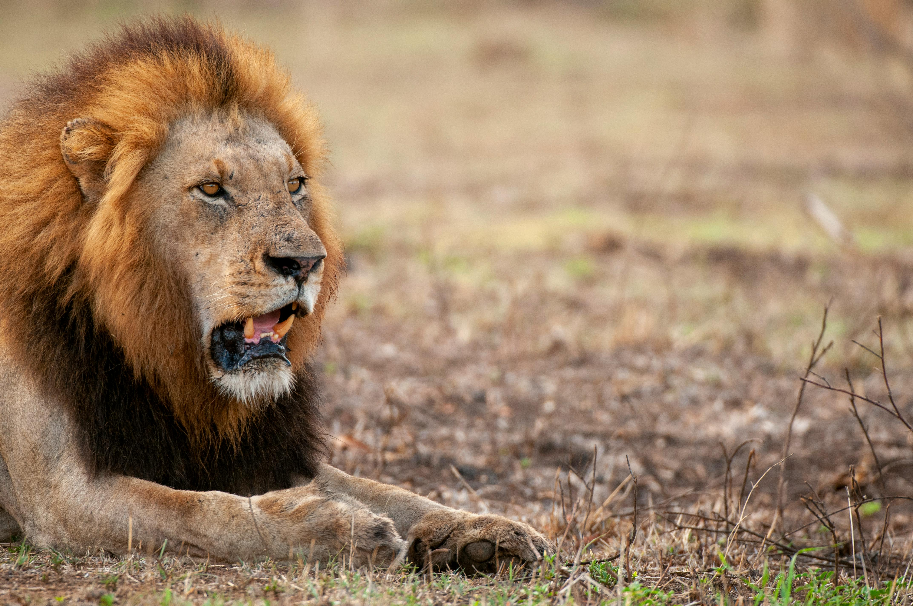

The African Lion
Diet & Habitat
Diet: Carnivore. Lions are apex predators that hunt medium-to-large ungulates like wildebeest, zebras, and buffalo.
Habitat: Open woodlands, scrub, and grasslands. They are most famous for roaming the vast plains of the Serengeti and Kruger National Park.
Fun Facts
- Lions are the only cats that live in large social groups called prides.
- A lion's roar can be heard from as far as 5 miles (8 kilometers) away.
- Female lions are the primary hunters for the pride.